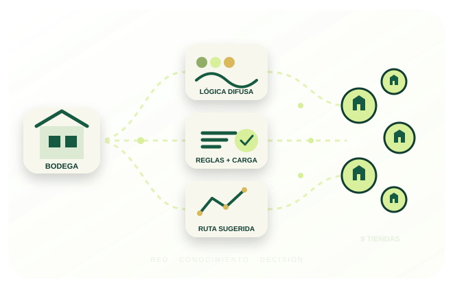

SPRINT 1
Red y rutas
Nueve tiendas conectadas; caminos mínimos y recorridos bajo un límite de tiempo.
Un prototipo que reúne la red de tiendas, el sistema experto y la planificación de reparto en un flujo simple: comprender la necesidad, priorizar con lógica difusa, asignar unidades y proponer una ruta.

Nueve tiendas conectadas; caminos mínimos y recorridos bajo un límite de tiempo.
Base de conocimiento y diez reglas SI–ENTONCES para explicar la prioridad.
Escenarios competitivos y algoritmo genético para ordenar las visitas.
Puntaje continuo que suaviza los umbrales y capacidad repartida según necesidad.
La herramienta conecta las piezas de los tres sprints para facilitar la lectura de la recomendación.